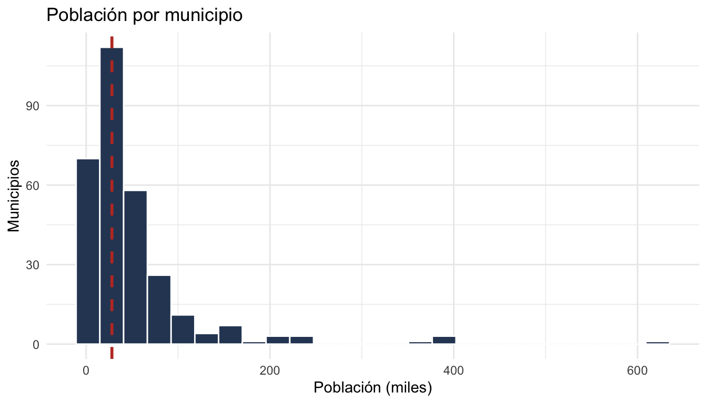

library(tidymodels)
library(tidyverse)
datos <- read_csv("datos/desarrollo_municipios.csv", show_col_types = FALSE)
datos <- datos |>
mutate(desarrollo_alto = factor(desarrollo_alto, levels = c("no", "si")))Tarea 1: Clasificación con tidymodels — Respuestas
IA para Científicos Sociales - UCU
1 Instrucciones
Esta es la clave de respuestas de la Tarea 1. Cada pregunta incluye el código R completo y una respuesta escrita.
1.1 Configuración
2 Exploración y preprocesamiento
2.1 Pregunta 1: Resumen por país
Calculen la media de ingreso_promedio y acceso_agua por país. ¿Qué país tiene los municipios más ricos en promedio? ¿El ranking de agua coincide con el de ingreso?
datos |>
group_by(pais) |>
summarise(
municipios = n(),
ingreso_medio = round(mean(ingreso_promedio)),
agua_media = round(mean(acceso_agua), 1)
) |>
arrange(desc(ingreso_medio))# A tibble: 6 × 4
pais municipios ingreso_medio agua_media
<chr> <int> <dbl> <dbl>
1 Brasil 50 986 77.8
2 Uruguay 58 951 80
3 Colombia 45 942 75.9
4 Perú 51 925 77
5 Argentina 46 902 78.5
6 México 50 864 75.9Respuesta: Los municipios de Brasil tienen el ingreso promedio más alto (~986 USD), seguidos de cerca por Uruguay y Colombia; México queda último (~864 USD). El ranking de acceso a agua no coincide exactamente: Uruguay encabeza el agua (~80%) aunque es segundo en ingreso. Las diferencias entre países son chicas comparadas con la variación entre municipios dentro de cada país, lo que anticipa que pais no sería un gran predictor: la acción está a nivel municipal.
2.2 Pregunta 2: Visualización de distribuciones
Creen un histograma de escolaridad_media con una línea vertical en la mediana, y otro de poblacion. ¿Qué diferencia notan entre las dos distribuciones?
ggplot(datos, aes(x = escolaridad_media)) +
geom_histogram(bins = 25, fill = "#2d4563", color = "white") +
geom_vline(xintercept = median(datos$escolaridad_media),
color = "#c0392b", linewidth = 1, linetype = "dashed") +
labs(title = "Escolaridad media por municipio",
x = "Años de escolaridad", y = "Municipios") +
theme_minimal()
ggplot(datos, aes(x = poblacion)) +
geom_histogram(bins = 25, fill = "#2d4563", color = "white") +
geom_vline(xintercept = median(datos$poblacion),
color = "#c0392b", linewidth = 1, linetype = "dashed") +
labs(title = "Población por municipio",
x = "Población (miles)", y = "Municipios") +
theme_minimal()
Respuesta: La escolaridad media es aproximadamente simétrica alrededor de su mediana (~8,6 años), con forma de campana. La población, en cambio, está fuertemente sesgada a la derecha: la mayoría de los municipios son chicos y unos pocos son muy grandes, así que la media queda bastante por encima de la mediana. Es el patrón típico de variables de tamaño (población, ingreso bruto), y la razón por la que muchas veces se las transforma con logaritmo antes de modelar.
2.3 Pregunta 3: Correlaciones
Calculen la matriz de correlaciones entre los 8 predictores numéricos. ¿Cuáles dos variables tienen la correlación más alta (en valor absoluto)?
mat_cor <- datos |>
select(where(is.numeric)) |>
cor()
round(mat_cor, 2) ingreso_promedio escolaridad_media acceso_agua
ingreso_promedio 1.00 0.63 0.57
escolaridad_media 0.63 1.00 0.62
acceso_agua 0.57 0.62 1.00
acceso_electricidad 0.56 0.60 0.56
empleo_formal 0.68 0.63 0.58
distancia_capital -0.18 -0.14 -0.13
poblacion 0.25 0.34 0.22
presupuesto_per_capita 0.30 0.33 0.31
acceso_electricidad empleo_formal distancia_capital
ingreso_promedio 0.56 0.68 -0.18
escolaridad_media 0.60 0.63 -0.14
acceso_agua 0.56 0.58 -0.13
acceso_electricidad 1.00 0.62 -0.12
empleo_formal 0.62 1.00 -0.16
distancia_capital -0.12 -0.16 1.00
poblacion 0.24 0.34 -0.13
presupuesto_per_capita 0.29 0.35 -0.11
poblacion presupuesto_per_capita
ingreso_promedio 0.25 0.30
escolaridad_media 0.34 0.33
acceso_agua 0.22 0.31
acceso_electricidad 0.24 0.29
empleo_formal 0.34 0.35
distancia_capital -0.13 -0.11
poblacion 1.00 0.22
presupuesto_per_capita 0.22 1.00# Buscar el par con mayor correlación absoluta
as.data.frame(as.table(mat_cor)) |>
filter(as.character(Var1) < as.character(Var2)) |>
arrange(desc(abs(Freq))) |>
head(3) Var1 Var2 Freq
1 empleo_formal ingreso_promedio 0.6799916
2 escolaridad_media ingreso_promedio 0.6321148
3 empleo_formal escolaridad_media 0.6302012Respuesta: El par con la correlación más alta es empleo_formal e ingreso_promedio (~0,68), seguido de cerca por escolaridad e ingreso (~0,63). Tiene todo el sentido teórico: donde hay más empleo formal, los hogares declaran más ingreso, y la escolaridad acompaña a ambos. Estas correlaciones moderadas-altas entre predictores anticipan el fenómeno de la Pregunta 13: cuando varios predictores comparten información, algunos van a quedar “opacados” en el modelo multivariado.
3 División y entrenamiento
3.1 Pregunta 4: División estratificada
Saquen municipio y pais, dividan 80/20 con estratificación por desarrollo_alto y set.seed(42). Verifiquen las proporciones.
datos_modelo <- datos |>
select(-municipio, -pais)
set.seed(42)
split <- initial_split(datos_modelo, prop = 0.80, strata = desarrollo_alto)
train <- training(split)
test <- testing(split)
cat("Entrenamiento:", nrow(train), "observaciones\n")Entrenamiento: 240 observacionescat("Prueba:", nrow(test), "observaciones\n")Prueba: 60 observaciones# Proporciones en entrenamiento
train |>
count(desarrollo_alto) |>
mutate(prop = round(n / sum(n), 3))# A tibble: 2 × 3
desarrollo_alto n prop
<fct> <int> <dbl>
1 no 128 0.533
2 si 112 0.467# Proporciones en prueba
test |>
count(desarrollo_alto) |>
mutate(prop = round(n / sum(n), 3))# A tibble: 2 × 3
desarrollo_alto n prop
<fct> <int> <dbl>
1 no 32 0.533
2 si 28 0.467Respuesta: El conjunto de entrenamiento tiene 240 observaciones y el de prueba 60. Gracias a la estratificación, las proporciones de "si" y "no" son casi idénticas en ambos conjuntos (~47% de municipios con desarrollo alto). Sin estratificar, con una muestra de prueba de solo 60 municipios, el azar podría dejar un conjunto de prueba bastante desbalanceado.
3.2 Pregunta 5: La línea base
Calculen la accuracy de un “modelo” que siempre predice la clase mayoritaria de desarrollo_alto en el conjunto de prueba.
test |>
count(desarrollo_alto) |>
mutate(prop = round(n / sum(n), 3))# A tibble: 2 × 3
desarrollo_alto n prop
<fct> <int> <dbl>
1 no 32 0.533
2 si 28 0.467baseline_acc <- test |>
count(desarrollo_alto) |>
mutate(prop = n / sum(n)) |>
summarise(baseline = max(prop)) |>
pull(baseline)
cat("Accuracy de la línea base (clase mayoritaria):", round(baseline_acc, 3), "\n")Accuracy de la línea base (clase mayoritaria): 0.533 Respuesta: La clase mayoritaria en el conjunto de prueba es "no" con ~53%: predecir siempre "no" acierta el 53,3% de las veces sin usar ningún predictor. Esa es la “tasa de no-información”, el piso que cualquier modelo útil debe superar. Una accuracy del 70% suena bien en abstracto, pero solo significa algo en relación con este piso.
3.3 Pregunta 6: ¿Cuánto mejora el modelo completo?
Ajusten el modelo logístico completo con los 8 predictores y comparen su accuracy con la línea base.
modelo_log <- logistic_reg() |>
set_engine("glm") |>
set_mode("classification")
ajuste_completo <- modelo_log |>
fit(desarrollo_alto ~ ., data = train)
pred_completo <- ajuste_completo |>
predict(test) |>
bind_cols(test)
acc_completo <- pred_completo |>
accuracy(truth = desarrollo_alto, estimate = .pred_class)
cat("Línea base (clase mayoritaria):", round(baseline_acc, 3), "\n")Línea base (clase mayoritaria): 0.533 cat("Accuracy modelo completo:", round(acc_completo$.estimate, 3), "\n")Accuracy modelo completo: 0.85 cat("Mejora sobre la línea base:",
round(acc_completo$.estimate - baseline_acc, 3), "\n")Mejora sobre la línea base: 0.317 Respuesta: El modelo completo alcanza una accuracy de 0,85 en el conjunto de prueba, unos 32 puntos porcentuales por encima de la línea base (0,53). Los predictores aportan información real sobre el nivel de desarrollo. Esta es la comparación que importa: el mismo 85% sería decepcionante si la clase mayoritaria ya representara el 84% de los casos.
4 Evaluación
4.1 Pregunta 7: Matriz de confusión
Construyan la matriz de confusión sobre el conjunto de prueba. ¿Cuántos falsos positivos y falsos negativos hay?
mc <- conf_mat(pred_completo, truth = desarrollo_alto, estimate = .pred_class)
mc Truth
Prediction no si
no 27 4
si 5 24autoplot(mc, type = "heatmap") +
labs(title = "Matriz de confusión - modelo completo")
tabla <- mc$table
fp <- tabla["si", "no"] # predicho si, real no
fn <- tabla["no", "si"] # predicho no, real si
cat("Falsos positivos (predicho si, real no):", fp, "\n")Falsos positivos (predicho si, real no): 5 cat("Falsos negativos (predicho no, real si):", fn, "\n")Falsos negativos (predicho no, real si): 4 Respuesta: El modelo comete 5 falsos positivos (municipios que predijo como desarrollados pero no lo son) y 4 falsos negativos (municipios desarrollados que no identificó). Los dos tipos de error son igual de frecuentes en términos prácticos; con 60 casos de prueba, una diferencia de un error no es interpretable. Lo que importa para la decisión de política no es cuál error es más frecuente sino cuál es más costoso, y eso lo discutimos en la pregunta siguiente.
4.2 Pregunta 8: Precisión vs. recall
Calculen precisión y recall (event_level = "second"). En el escenario de los subsidios (un falso positivo = cortarle los fondos a un municipio que los necesita), ¿qué métrica priorizarían?
prec <- pred_completo |>
precision(truth = desarrollo_alto, estimate = .pred_class,
event_level = "second")
rec <- pred_completo |>
recall(truth = desarrollo_alto, estimate = .pred_class,
event_level = "second")
cat("Precisión:", round(prec$.estimate, 3), "\n")Precisión: 0.828 cat("Recall:", round(rec$.estimate, 3), "\n")Recall: 0.857 Respuesta: La precisión es ~0,83 y el recall ~0,86. En este escenario el error caro es el falso positivo: declarar “desarrollado” a un municipio que no lo es significa cortarle los subsidios a una población que todavía los necesita. Por eso priorizaríamos la precisión: queremos que, cuando el modelo dice “si”, casi siempre sea verdad. Un falso negativo (mantener fondos en un municipio que ya se desarrolló) también cuesta dinero, pero su consecuencia social es mucho menos grave.
4.3 Pregunta 9: Efecto del umbral
Calculen precisión y recall para los umbrales 0.2, 0.35, 0.5, 0.65 y 0.8. ¿Qué umbral elegirían para el escenario de los subsidios?
pred_probs <- ajuste_completo |>
predict(test, type = "prob") |>
bind_cols(test)
umbrales <- c(0.2, 0.35, 0.5, 0.65, 0.8)
tabla_umbrales <- map_df(umbrales, function(u) {
pred_probs |>
mutate(.pred_u = factor(if_else(.pred_si >= u, "si", "no"),
levels = c("no", "si"))) |>
summarise(
umbral = u,
precision = precision_vec(desarrollo_alto, .pred_u,
event_level = "second"),
recall = recall_vec(desarrollo_alto, .pred_u,
event_level = "second")
)
})
tabla_umbrales |>
mutate(across(c(precision, recall), \(x) round(x, 3)))# A tibble: 5 × 3
umbral precision recall
<dbl> <dbl> <dbl>
1 0.2 0.619 0.929
2 0.35 0.684 0.929
3 0.5 0.828 0.857
4 0.65 0.85 0.607
5 0.8 0.867 0.464Respuesta: La tabla muestra el intercambio clásico: con umbral 0,2 el recall es altísimo (~0,93) pero la precisión cae a ~0,62; con umbral 0,8 la precisión sube a ~0,87 pero el recall se desploma a ~0,46. Para el escenario de los subsidios conviene un umbral alto (0,65 o incluso 0,8): sólo “graduamos” a un municipio cuando el modelo está muy seguro, minimizando los falsos positivos que son el error socialmente caro. El precio es revisar a mano (o seguir financiando) municipios desarrollados que el modelo no detectó.
4.4 Pregunta 10: Curva ROC y AUC
Grafiquen la curva ROC y calculen el AUC (event_level = "second").
pred_probs |>
roc_curve(truth = desarrollo_alto, .pred_si, event_level = "second") |>
autoplot() +
labs(title = "Curva ROC - modelo completo")
pred_probs |>
roc_auc(truth = desarrollo_alto, .pred_si, event_level = "second")# A tibble: 1 × 3
.metric .estimator .estimate
<chr> <chr> <dbl>
1 roc_auc binary 0.888Respuesta: El AUC es ~0,89. Según la tabla de referencia del laboratorio (0,5 = azar; 0,7-0,8 = aceptable; 0,8-0,9 = bueno; >0,9 = excelente), es un modelo bueno, cerca de excelente: si tomamos al azar un municipio desarrollado y uno no desarrollado, el modelo le asigna mayor probabilidad al desarrollado el 89% de las veces. La ventaja del AUC sobre la accuracy es que resume el desempeño en todos los umbrales a la vez, lo cual conecta directamente con la Pregunta 9.
5 Validación cruzada
5.1 Pregunta 11: Validación cruzada con 10 folds
Realicen validación cruzada con 10 folds. ¿La accuracy del conjunto de prueba (Pregunta 6) cae dentro de media ± 2 errores estándar?
wf_completo <- workflow() |>
add_model(modelo_log) |>
add_formula(desarrollo_alto ~ .)
set.seed(123)
folds10 <- vfold_cv(train, v = 10, strata = desarrollo_alto)
res_cv10 <- fit_resamples(wf_completo, folds10)
collect_metrics(res_cv10)# A tibble: 3 × 6
.metric .estimator mean n std_err .config
<chr> <chr> <dbl> <int> <dbl> <chr>
1 accuracy binary 0.782 10 0.0363 pre0_mod0_post0
2 brier_class binary 0.157 10 0.0189 pre0_mod0_post0
3 roc_auc binary 0.857 10 0.0313 pre0_mod0_post0acc_cv <- collect_metrics(res_cv10) |> filter(.metric == "accuracy")
cat("Rango (media ± 2 SE): [",
round(acc_cv$mean - 2 * acc_cv$std_err, 3), ",",
round(acc_cv$mean + 2 * acc_cv$std_err, 3), "]\n")Rango (media ± 2 SE): [ 0.71 , 0.855 ]cat("Accuracy en test (Pregunta 6):", round(acc_completo$.estimate, 3), "\n")Accuracy en test (Pregunta 6): 0.85 Respuesta: La validación cruzada estima una accuracy promedio cercana a 0,78 con un error estándar de ~0,04, es decir un rango de aproximadamente [0,71; 0,86]. La accuracy del conjunto de prueba (0,85) queda en la parte alta de ese rango: es consistente, aunque sugiere que esta partición de prueba en particular fue algo “fácil”. Es un buen recordatorio de que una única partición train/test da una estimación ruidosa, y la validación cruzada da una idea más honesta de la variabilidad.
5.2 Pregunta 12: Modelo reducido
Ajusten un modelo con los 4 predictores de menor p-valor y comparen su accuracy (CV, 5 folds) con la del modelo completo.
# Identificar los 4 predictores con menor p-valor
tidy(ajuste_completo) |>
filter(term != "(Intercept)") |>
arrange(p.value) |>
mutate(across(where(is.numeric), \(x) round(x, 4)))# A tibble: 8 × 5
term estimate std.error statistic p.value
<chr> <dbl> <dbl> <dbl> <dbl>
1 ingreso_promedio 0.0023 0.0007 3.55 0.0004
2 acceso_agua 0.0612 0.019 3.22 0.0013
3 presupuesto_per_capita 0.0038 0.0017 2.26 0.0241
4 distancia_capital -0.0023 0.0013 -1.76 0.0785
5 poblacion 0.0054 0.0039 1.38 0.168
6 escolaridad_media 0.143 0.136 1.05 0.294
7 acceso_electricidad -0.0234 0.0289 -0.810 0.418
8 empleo_formal 0.0133 0.0176 0.754 0.451 wf_reducido <- workflow() |>
add_model(modelo_log) |>
add_formula(desarrollo_alto ~ ingreso_promedio + acceso_agua +
presupuesto_per_capita + distancia_capital)
set.seed(123)
folds5 <- vfold_cv(train, v = 5, strata = desarrollo_alto)
res_completo <- fit_resamples(wf_completo, folds5)
res_reducido <- fit_resamples(wf_reducido, folds5)
bind_rows(
collect_metrics(res_completo) |> mutate(modelo = "completo (8)"),
collect_metrics(res_reducido) |> mutate(modelo = "reducido (4)")
) |>
filter(.metric == "accuracy") |>
select(modelo, mean, std_err) |>
mutate(across(where(is.numeric), \(x) round(x, 3)))# A tibble: 2 × 3
modelo mean std_err
<chr> <dbl> <dbl>
1 completo (8) 0.761 0.033
2 reducido (4) 0.787 0.026Respuesta: Los 4 predictores con menor p-valor son ingreso_promedio, acceso_agua, presupuesto_per_capita y distancia_capital. En validación cruzada, el modelo reducido rinde igual o levemente mejor que el completo (~0,79 vs ~0,76), y con menor error estándar. Vale la pena el modelo reducido: misma capacidad predictiva, la mitad de las variables, y más fácil de explicar a un tomador de decisiones. Los cuatro predictores descartados aportan poca información que los otros no tengan ya (recuerden las correlaciones de la Pregunta 3).
6 Reflexión
6.1 Pregunta 13: Variables sin efecto
¿Por qué acceso_electricidad y poblacion correlacionan con el outcome pero no son significativas en el modelo multivariado?
Respuesta: Porque la correlación bivariada y el efecto multivariado responden preguntas distintas. acceso_electricidad correlaciona con desarrollo_alto (~0,4) porque ambos comparten causas: los municipios con más ingreso y mejor infraestructura general también tienen más electricidad. Pero una vez que el modelo ya conoce el ingreso, el agua y el empleo formal, saber además la electricidad casi no agrega información: su coeficiente queda cerca de cero y no significativo. El modelo multivariado estima el efecto de cada variable manteniendo las demás constantes, y ahí la electricidad no tiene nada propio que decir. Ejemplo de la vida real: el número de libros en el hogar correlaciona con el rendimiento escolar de los hijos, pero al controlar por educación e ingreso de los padres el “efecto libros” casi desaparece: los libros eran un síntoma del entorno, no la causa.
6.2 Pregunta 14: ¿Recomendarían este modelo?
Respuesta: Recomendación: sí, pero como filtro inicial, no como decisión automática. A favor: el modelo supera con claridad la línea base (0,85 vs 0,53 de accuracy), tiene un AUC de ~0,89 (bueno) y la validación cruzada confirma que el desempeño no es producto de una partición afortunada (~0,79 ± 0,03). En contra: con umbral 0,5 la precisión es ~0,83, es decir que aproximadamente 1 de cada 6 municipios “graduados” perdería subsidios sin estar realmente desarrollado, un costo social inaceptable si la decisión es automática. El error que más preocupa es el falso positivo (cortar fondos a quien los necesita). Propuesta concreta: usar el modelo con umbral alto (0,65-0,8) para armar la lista de candidatos a graduación, y que un equipo humano verifique cada caso antes de cortar fondos. El modelo ahorra trabajo de revisión; no reemplaza la decisión.